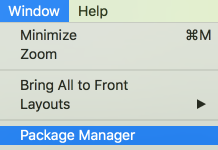
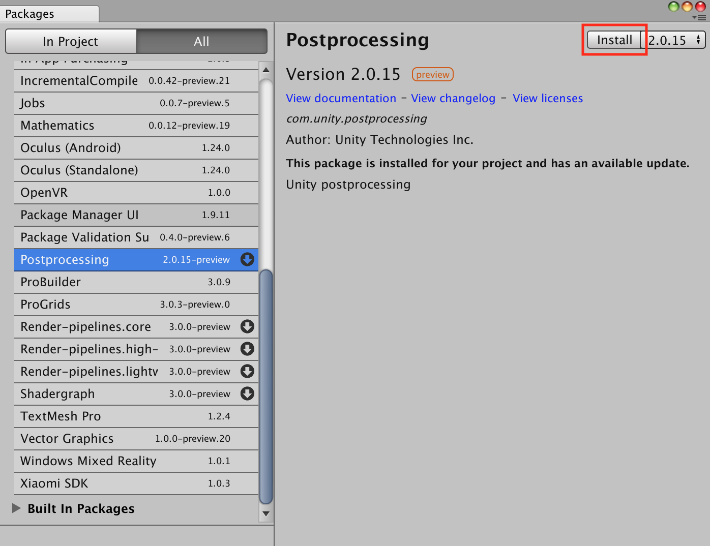
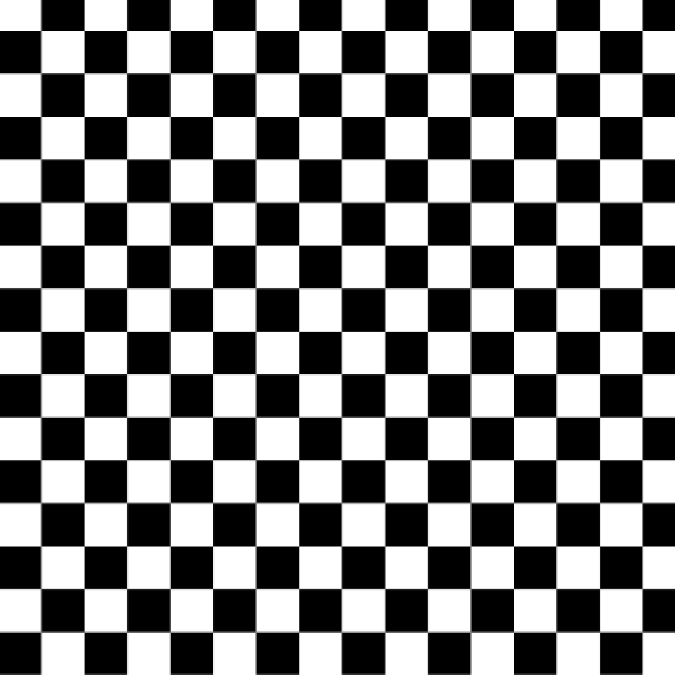
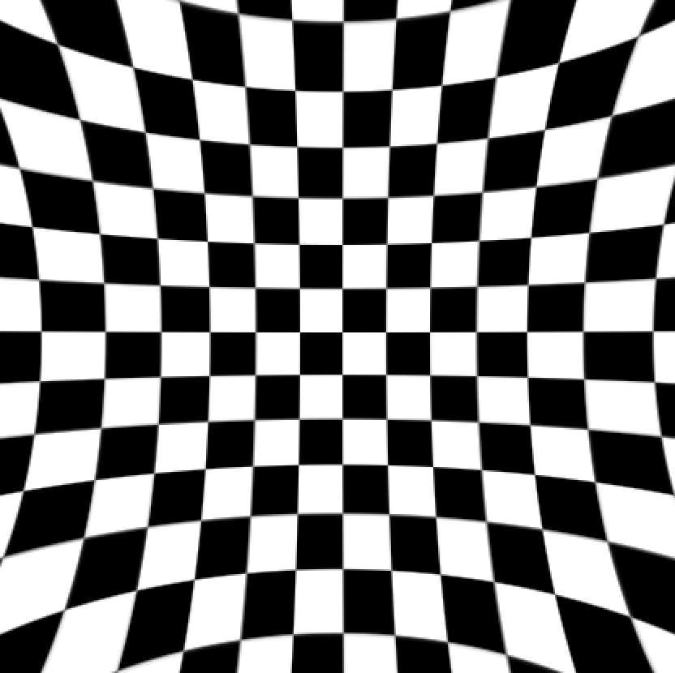
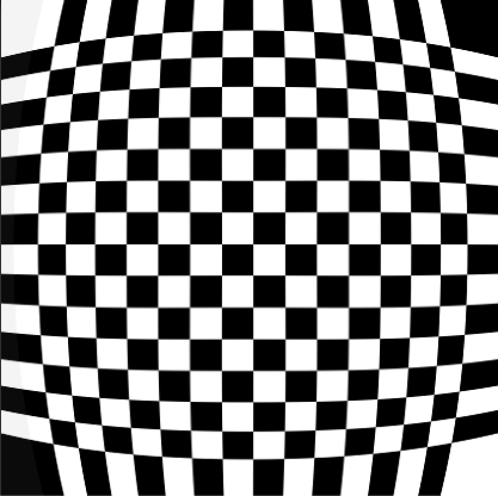
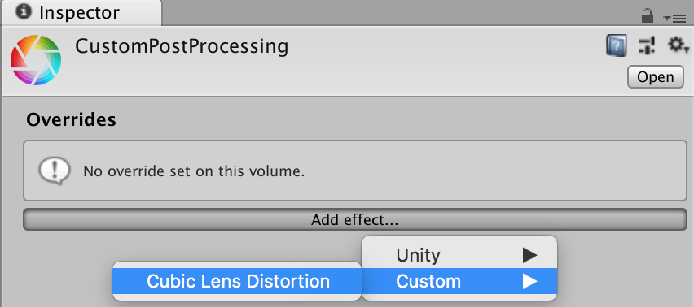
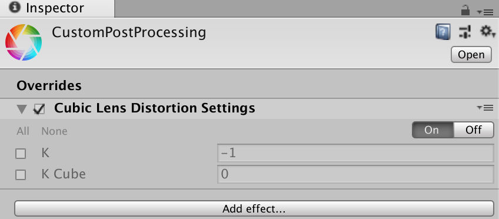

本篇文章會逐步介紹如何製作客製化全屏濾鏡效果，並與 Unity Post Processing Stack V2 進行整合。
關鍵字快搜：Post Processing Stack V2、Package Manager、Cubic Lens Distortion、Writing Custom Effects
Post Processing Stack 是在顯示圖像到螢幕前，將全屏濾鏡效果應用到攝影機緩衝區的過程，透過這個功能能夠在短時間內大幅改善產品的視覺呈現效果。
Unity 2017 開始提供了 Package Manager 這個整合插件的新功能，也因此誕生出 Post-Processing Stack V2 的版本，透過 Package Manager 能夠很方便的將 Post Processing Stack 匯入專案內使用。
開啟 Package Manager

安裝 Postprocessing

在 Post Processing Stack 之前，常見的全屏濾鏡效果需要使用 OnRenderImage、Graphics.Blit 及 Shader 製作。
而在建立客製化 Post Processing Effect 時，同樣也需要撰寫 Shader。
Shader "Hidden/Cubic Lens Distortion"
{
Properties
{
_MainTex ("Texture", 2D) = "white" {}
_K ("K", Float) = -0.15
_KCube ("KCube", Float) = 0.5
}
SubShader
{
// No culling or depth
Cull Off ZWrite Off ZTest Always
Pass
{
CGPROGRAM
#pragma vertex vert
#pragma fragment frag
#include "UnityCG.cginc"
struct appdata
{
float4 vertex : POSITION;
float2 uv : TEXCOORD0;
};
struct v2f
{
float2 uv : TEXCOORD0;
float4 vertex : SV_POSITION;
};
v2f vert (appdata v)
{
v2f o;
o.vertex = UnityObjectToClipPos(v.vertex);
o.uv = v.uv;
return o;
}
sampler2D _MainTex;
fixed _K;
fixed _KCube;
fixed4 frag (v2f i) : SV_Target
{
fixed2 r = i.uv - 0.5;
fixed r2 = r.x * r.x + r.y * r.y;
fixed f = 0;
if(_KCube == 0)
{
f = 1 + r2 * _K;
}
else
{
f = 1 + r2 * (_K + _KCube * sqrt(r2));
}
fixed2 uv = f * (i.uv - 0.5) + 0.5;
fixed4 col = tex2D(_MainTex, uv);
return col;
}
ENDCG
}
}
}無效果

K = -1, KCube = 0.5

K = -0.5, KCube = 1.5

CubicLensDistortionSettings.cs
using System;
using UnityEngine;
using UnityEngine.Rendering.PostProcessing;
[Serializable]
[PostProcess(typeof(CubicLensDistortionRenderer), PostProcessEvent.AfterStack, "Custom/Cubic Lens Distortion")]
public sealed class CubicLensDistortionSettings : PostProcessEffectSettings
{
[Tooltip("Cubic Lens Distortion K value")]
public FloatParameter K = new FloatParameter { value = -1 };
[Tooltip("Cubic Lens Distortion KCube value")]
public FloatParameter KCube = new FloatParameter { value = 0 };
}CubicLensDistortionSettings 負責處理效果的參數部分，繼承 PostProcessEffectSettings 並宣告需要調整的參數。
FloatParameter 對應 ShaderLab Parameter Float
ColorParameter 對應 ShaderLab Parameter Color
Vector4Parameter 對應 ShaderLab Parameter Vector
TextureParameter 對應 ShaderLab Parameter 2D
CubicLensDistortionRenderer.cs
using UnityEngine;
using UnityEngine.Rendering.PostProcessing;
public sealed class CubicLensDistortionRenderer : PostProcessEffectRenderer<CubicLensDistortionSettings>
{
public override void Render(PostProcessRenderContext context)
{
PropertySheet sheet = context.propertySheets.Get(Shader.Find("Custom/CubicLensDistortion"));
sheet.properties.SetFloat("_K", settings.K);
sheet.properties.SetFloat("_KCube", settings.KCube);
context.command.BlitFullscreenTriangle(context.source, context.destination, sheet, 0);
}
}完成 Settings 設定後，需要進行最後的腳本撰寫，透過 Shader 取得 PropertySheet，並指派 Setting 中的參數資料。
完成 Settings 及 Renderer 的部分後，就可以在 Post Processing Profile 中選擇並加入客製化效果。


GitHub – Unity-Technologies/PostProcessing: Post Processing Stack
CUBIC LENS DISTORTION SHADER
(Shader Library) Fish Eye, Dome and Barrel Distortion GLSL Post Processing Filters